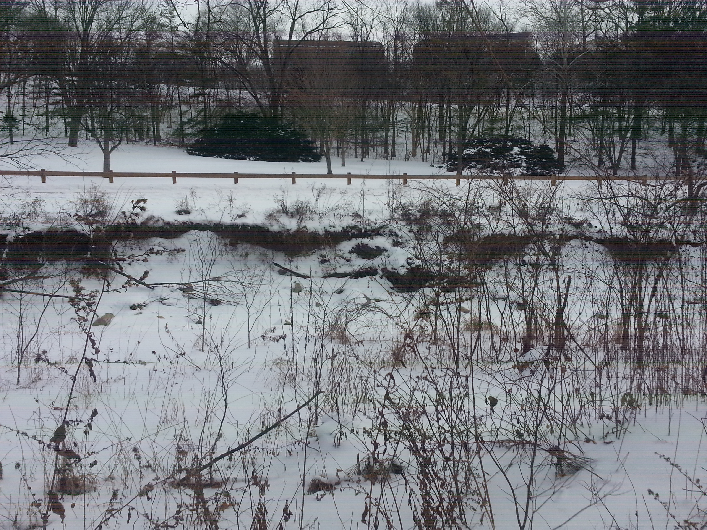
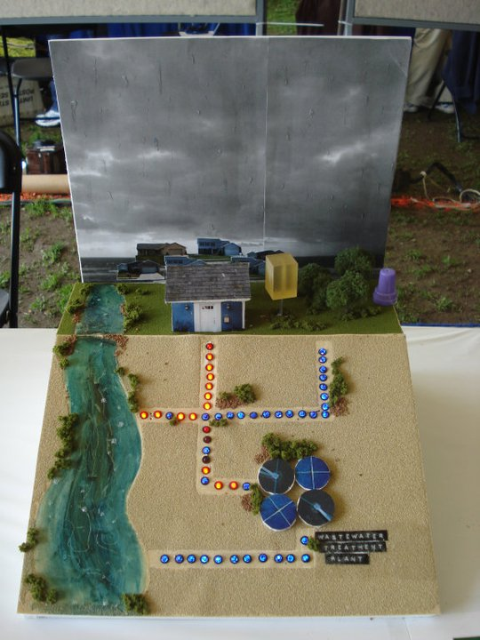
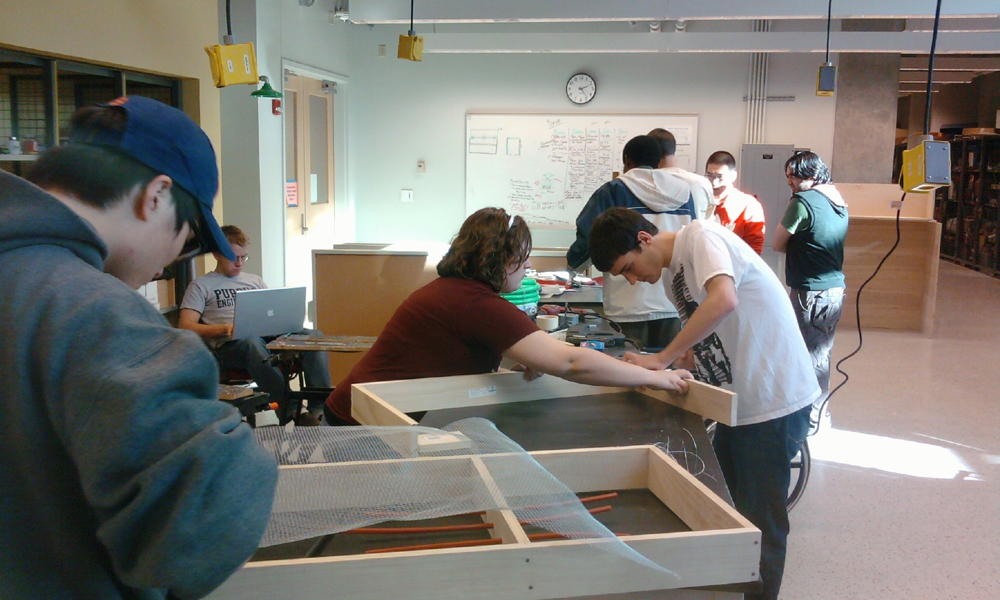

Water Resource Management
Pictures
Home
Current / Past Projects
Team Members
Project Partners
Pictures
Erosion in Happy Hollow Park

Rain Barrel At Expo

Rain Garden Frame Construction

Back to top